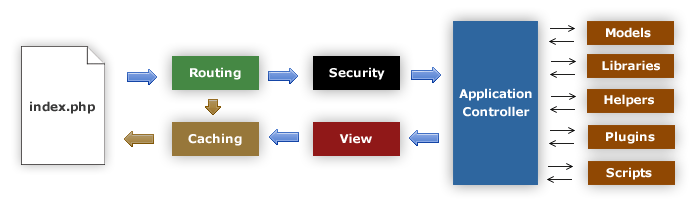

Application Flow Chart
The following graphic illustrates how data flows throughout the LavaLust system:
Process Overview
The
index.phpserves as the front controller, initializing the base resources needed to run LavaLust.The Router examines the HTTP request to determine what should be done with it.
If a cache file exists, it is sent directly to the browser, bypassing the normal system execution.
Security: Before the application controller is loaded, the HTTP request and any user-submitted data are filtered for security.
The Controller loads the model, core libraries, helpers, and any other resources needed to process the specific request.
The finalized View is rendered and sent to the web browser to be seen. If caching is enabled, the view is cached first so that on subsequent requests it can be served directly.